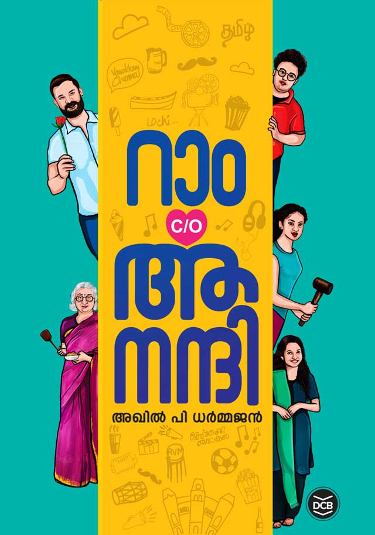

Author: അഖിൽ പി ധർമജൻ
Review by: സിന്ധു ഉല്ലാസ്
അഖിൽ പി ധർമ്മജന്റെ റാം കെയർഓഫ് ആനന്ദി ഞാനും വായിച്ചു.
അടുത്ത നാളുകളിലായി സോഷ്യൽ മീഡിയയിൽ നല്ല പരസ്യം കൊടുത്തിട്ടുള്ള ഒരു പുസ്തകം ആയിരുന്നു അത്. മാത്രമല്ല ബെസ്റ്റ് സെല്ലറും.
ആനന്ദി എന്ന ഈ കൃതി വളരെ ഒഴുക്കൊടെ ഉദ്യോഗത്തോടെ വായിച്ചു പോകാവുന്ന ഒന്നാണ്.
അഖിൽ പി ധർമ്മജനെ പോലെ ന്യൂജനറേഷൻ കഥാകൃത്ത് എഴുതുന്ന ഒരു നോവൽ ന്യൂജനറേഷനിൽ പെട്ട ആളുകളെ ആകർഷിക്കുന്ന ഒന്നായി മാറിയത് വളരെ പെട്ടെന്ന് ആണ്.
എനിക്ക് തോന്നിയ ഒരു കാര്യം വായനയിലേക്ക് ആകൃഷ്ടരായി എത്തുന്ന യുവാക്കളെ പുസ്തകങ്ങളിലേക്ക് കൂടുതൽ അടുപ്പിക്കാൻ പറ്റുന്ന ഒരു പുസ്തകം.
റാമും ആനന്ദിയും രേഷ്മയും വെട്രിയും പാട്ടിയും ഒക്കെ അടങ്ങുന്ന ഒരു സൗഹൃദസംഘം. അവരെ അഭിമുഖീകരിക്കുന്ന വിവിധങ്ങളായ പ്രശ്നങ്ങൾ, തമാശകൾ, പ്രണയം, വിരഹം എല്ലാം ഇതിൽ പറഞ്ഞു പോകുന്നുണ്ട്.
ട്രാൻസ്ജെൻഡർ കമ്മ്യൂണിറ്റി അഭിമുഖീകരിക്കുന്ന വലിയ പ്രശ്നങ്ങളെ മനോഹരമായി/നൊമ്പരപ്പെടുത്തുന്ന രീതിയിൽ ചിത്രീകരിച്ചിട്ടുണ്ട്.
ശ്രീലങ്കൻ തമിഴ് വംശജർ നേരിടുന്ന പ്രശ്നങ്ങളും, തിരുട്ടു ഗ്രാമത്തെക്കുറിച്ചും വിശദമായി പറയുന്നുണ്ട്. വായനയിലേക്ക് കടന്നുവരുന്നവരെ ആകർഷിക്കുന്ന കൃതി എന്നതാണ് ഏറ്റവും വലിയ ആകർഷണം.
Review by: എ ആർ പ്രസാദ്
ഇന്നലെയും ഇന്നുമായി റാം ആനന്ദി വായിച്ചു. അസാധാരണത്വമൊന്നും തോന്നാത്ത നോവൽ എന്നാണ് ഒരു വാചകത്തിൽ പറയാൻ തോന്നുന്നത്. അവസാന അധ്യായങ്ങളിലെത്തുമ്പോൾ ചില ഭാഗങ്ങളിൽ അൽപം മുഷിപ്പും തോന്നി.
പല ഭാഗങ്ങളും വായനക്കാരിൽ അൽപ്പം ഉദ്വേഗം സൃഷ്ടിക്കുന്ന തരത്തിലാണ് എഴുതിയിട്ടുള്ളത്. അതാവട്ടെ, ദുർഗാപ്രസാദ് ഖത്രിയുടെ കുറ്റാന്വേഷണ നോവലുകളെ ഓർമ്മിപ്പിക്കുന്നതായും തോന്നി.
ന്യൂജെൻ ജീവിതവും അവരുടെ സംസാര ശൈലിയുമൊക്കെ നോവലിൽ വന്നത് പുതിയ തലമുറയെ നോവലിലേയ്ക്ക് ആകർഷിച്ചിട്ടുണ്ടാവാം. മറ്റൊന്ന് വലിയ ചിന്താ ക്ലേശവും എഴുത്തിൻ്റെ ദുരൂഹതകളും ഇല്ലാതെ അവർക്ക് നോവൽ വായിക്കാം എന്നതാണ്.
എന്തായാലും വായനയിൽ നിന്ന് അൽപം അകന്നു നിൽക്കുന്ന ന്യൂജെൻ ആളുകളെ വലിയ രീതിയിൽ വായനയിലേയ്ക്ക് തിരിച്ചു കൊണ്ടുവന്ന നോവലിസ്റ്റ് അഖിലിന് അഭിനന്ദനങ്ങൾ🌹
പുതിയ പ്രമേയങ്ങളുമായി എഴുത്തിൻ്റെ തുടർച്ച അദ്ദേഹത്തിനുണ്ടാവട്ടെ എന്ന് ആശംസിക്കുന്നു.
എൻ്റെ വായനാനുഭവം ആയിരിക്കില്ല മറ്റൊരാൾക്ക് എന്നതിനാൽ പറ്റുന്ന എല്ലാവരും ഈ നോവൽ വായിച്ചു നോക്കണമെന്ന് അഭ്യർത്ഥിക്കുന്നു...
ആടുജീവിതം നോവൽ സിനിമയായി. ധാരാളം പേർ കാണുന്നു. എത്രയോ കാലത്തിന് ശേഷമാണ് ഒരു നോവൽ സിനിമയായി വിജയിക്കുന്നത്. സിനിമയ്ക്ക് എന്തെല്ലാം പരിമിതികളുണ്ടായാലും അത് നല്ലൊരു ലക്ഷണമാണ്. ആനന്ദിക്കും എന്തെങ്കിലും പരിമിതികളുണ്ടെങ്കിലും ഇത്രയധികം ആളുകളെ കൊണ്ട് അത് വായിപ്പിച്ചു... വായിപ്പിച്ചു കൊണ്ടിരിക്കുന്നു എന്നതും നല്ല കാര്യം😊👍
പുതു തലമുറ എഴുത്തിലേക്കും വായനയിലേക്കും സിനിമയിലേയ്ക്കും എത്താൻ ഇതൊക്കൊ പ്രചോദനമാവട്ടെ🌹🌿🌈🌈
Review by: ജോർജ് മാത്യു
ഇന്നത്തെ പകൽ റാമിനും ആനന്ദിയ്ക്കും വെട്രിയ്ക്കും രേഷ്മയ്ക്കും പാട്ടിയ്ക്കും മല്ലിയ്ക്കും ഒപ്പം തമിഴ് നാട്ടിലൂടെ ഒരു യാത്രയിലായിരുന്നു.
തീർന്നപ്പോൾ പ്രണയവും വിരഹവും കാത്തിരിപ്പും കലർന്ന ഒരു ഫാസിൽ ചിത്രം കണ്ട പ്രതീതി.
2018 ൻ്റെ തിരക്കഥാകൃത്താണ് അഖിൽ പി ധർമ്മജൻ. ഇനി ഇത് ഒരു തമിഴ് ചിത്രമായി വന്നാൽ കൂടുതൽ നന്നായിരിക്കുമെന്നു തോന്നി.
ഇത്രയധികം ചെറുപ്പക്കാരെ വായനയിലേയ്ക്കു അടുപ്പിക്കുന്ന രാസവിദ്യ കണ്ടുപിടിക്കാനാണ് വായന തുടങ്ങിയത്. അത് അനുഭവിച്ചു തന്നെ അറിയണം. വലിയ വാശികളൊന്നുമില്ലെങ്കിൽ റാമിനോടൊപ്പം ചിരിക്കാനും കരയാനും കഴിഞ്ഞേക്കും.
സ്മാർട്ട് ഫോണും ഹെഡ് സെറ്റും മാത്രല്ല ആർദ്രമായ ഒരു മനസ്സും സ്വന്തമായുണ്ടെന്ന് യുവജനങ്ങൾ പ്രളയകാലത്ത് കാണിച്ചു തന്നതാണ്. ഈ നോവലിൻ്റെ സ്വീകാര്യതയും ആടുജീവിതത്തിൻ്റെ വിജയവുമൊക്കെ അത് വീണ്ടും തെളിയിക്കുന്നു.
പഴയ തലമുറയ്ക്കു വേണെമെങ്കിൽ ഈ കാഴ്ചകളിൽ സന്തോഷിക്കാം. അല്ലെങ്കിൽ നഷ്ടപ്പെട്ട എന്തോ ഒന്നിൻ്റെ തിരിച്ചു വരവിനായി കാത്തിരിക്കാം.
കഥ പറയുന്ന അഖിലുമാരും അതുവായിക്കുന്ന ന്യൂ ജനറേഷനുമായി വായനയുടെ പൂക്കാലം തിരിച്ചുവരട്ടയെന്നു ആഗ്രഹിക്കുന്നു. ആശംസിക്കുന്നു.🍃☘️🌹